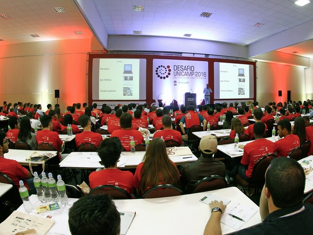
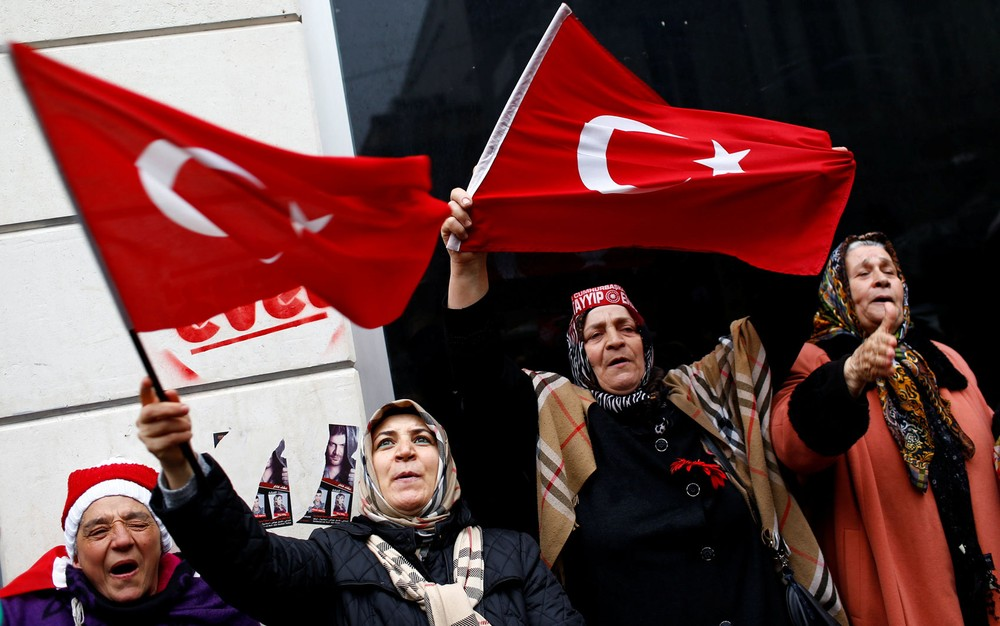
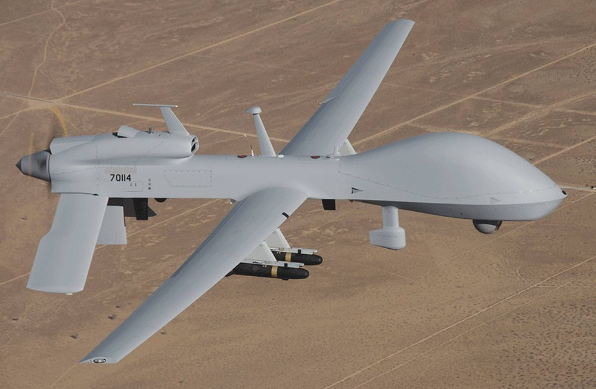

Unicamp disponibiliza 51 patentes para desafio de inovação tecnológica
Pensando em levar as tecnologias da universidade para o mercado, a Unicamp, em Campinas (SP), resolveu disponibilizar 51 patentes de seu portfólio para que alunos de graduação, pós-graduação e demais interessados em empreendedorismo do país desenvolvam modelos de negócio e as transformem em startups. Esse trabalho faz parte do Desafio Unicamp 2017 de Inovação Tecnológica, uma competição de empreendedorismo organizada pela Agência de Inovação Inova, que chega à sua sétima edição este ano. As inscrições ficam abertas até o dia 26 de março e devem ser feitas pela internet. As patentes estarão disponíveis para os participantes do desafio durante a competição. Eles deverão formar equipes de três a cinco membros para concorrrer. Cada integrante da equipe campeã levará R$ 3 mil, além de outros prêmios.
Turquia suspende relações com Holanda
Turquia suspendeu nesta segunda-feira (13) suas relações no mais alto nível com a Holanda, alegando o bloqueio do governo holandês para que os políticos turcos participem de encontros sobre o referendo no país, declarou o vice-primeiro-ministro turco. "Até que a Holanda não repare os danos que causou, as relações no mais alto nível e as reuniões previstas ao nível ministerial e a alto nível ficam suspensas", anunciou Numan Kurtulmus após uma reunião do conselho de ministros, acrescentando que Ancara rejeitou o retorno do embaixador holandês à capital turca enquanto "as condições expostas (para resolver a crise diplomática com a Holanda) não forem cumpridas". Também nesta segunda o governo turco convocou pela terceira vez em três dias o encarregado de negócios holandês para protestar contra o "tratamento dado aos ministros e cidadãos turcos na Holanda", depois da anulação de atos de apoio ao presidente turco Recep Tayyip Erdogan. Antes do anúncio, União Europeia e a Otan tentavam acalmar a crise. A UE apelou a Ancara a "se abster de toda declaração excessiva e ação que possa exacerbar a situação", após o presidente Erdogan prometer que a Holanda "pagará um preço alto" pelo tratamento dado aos dois ministros turcos, que, segundo ele, recordam "o nazismo e o fascismo". "É essencial evitar uma nova escalada e encontrar os meios de acalmar a situação", acrescentou a UE em uma declaração da chefe da diplomacia europeia, Federica Mogherini. O secretário-geral da Otan, Jens Stoltenberg, também pediu aos países da Aliança Atlântica que "contribuam para uma desescalada das tensões" diplomáticas entre a Turquia e alguns países europeus. "Eu incentivaria a todos os aliados a mostrar um respeito mútuo, a manter a calma e ter um enforque comedido para contribuir para uma desescalada das tensões", declarou Stoltenberg à imprensa. O governo americano também pediu calma nesta segunda-feira a Turquia e Holanda. "Ambos são sólidos sócios e aliados na OTAN. Lhes pedimos que a situação não entre em mais uma escalada e que trabalhem juntas para resolvê-la", disse um alto funcionário do Departamento de Estado antes do anúncio da suspensão das relações diplomáticas entre os dois países. A fonte afirmou que o governo de Donald Trump não interveio diretamente no conflito porque Turquia e Holanda são "democracias fortes" e "podem solucionar o problema entre elas". O alto funcionário não defendeu Ancara nem Haia, mas ressaltou que "os cidadãos devem poder manifestar-se pacificamente e que ambos os países devem evitar a guerra de palavras vista durante o final de semana".
Exército americano enviará drones armados para Coreia do Sul
exército americano enviará drones armados Gray Eagle MQ-1C para a Coreia do Sul, segundo anúncio do Pentágono feito nesta segunda-fera (13), num momento em que aumenta a preocupação pelo programa de mísseis nucleares da Coreia do Norte. O Departamento de Defesa afirmou que o envio deste tipo de dispositivo faz parte de um plano de reforço global da capacidade de drones do exército. "Não é apenas para a Coreia", apontou o porta-voz do Pentágono, Jeff Davis. "Todas as divisões da infantaria" americanas deverão estar equipadas com, pelo menos, uma companhia de drones Gray Eagle. Os dispositivos Gray Eagle MQ-1C são uma variação do famoso drone americano Predator. Possuem sensores e podem carregar até quatro mísseis Hellfire para bombardear alvos. Uma companhia de drones é formada por 128 pessoas e um número não especificado destes dispositivos, que são pilotados à distância. A companhia da Coreia do Sul será enviada "no início do ano que vem", de acordo com o porta-voz do Pentágono. As autoridades e estrategistas americanos estão cada vez mais preocupados com os movimentos do regime de Pyongyang. A Coreia do Norte realizou em 2016 dois testes nucleares e uma série de lançamentos de mísseis, demonstrando que avança em seu objetivo de produzir uma arma nuclear. O Conselho de Segurança da ONU condenou na semana passada por unanimidade, incluindo a China, os últimos lançamentos de mísseis. Os Estados Unidos têm 28 mil soldados na Coreia do Sul.